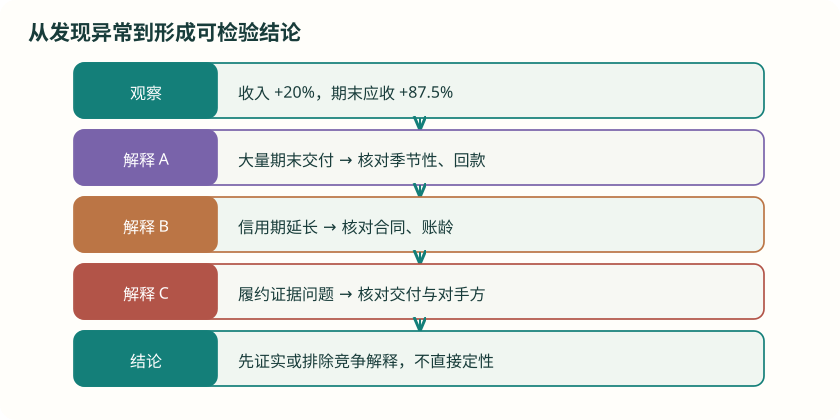
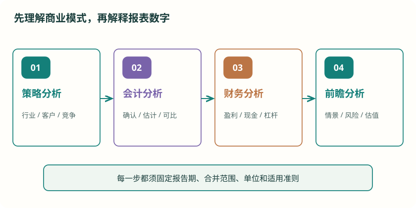

财报分析框架：从财务数字到可检验结论
指标不是结论。先提出业务问题，统一会计口径，把策略、会计、财务与前瞻解释连在一起，再用竞争假设验证。
先定义你究竟想回答什么
财报分析对股权投资、信用授信和经营管理的目标不同。债权人关心到期本息是否有资金偿还，投资者关注可持续的资本回报，经营者更关心产品成本、现金周转和产能投资。如果问题没有先界定，比率越多可能越难得出有效判断。
例如：“本年度收入增长 20%，但应收账款期末余额增长 87.5%，是收款质量恶化吗？”这是可以检验的问题，而“应收增长快所以公司有问题”不是充分的结论。

四个互补视角，而不是四个机械指标
Palepu 与 Healy 的商业分析与估值框架把分析分为四个互补领域：商业策略分析、会计分析、财务分析、前瞻分析。这是一种分析思路，不是监管机构要求的四个法定披露步骤。

策略
企业如何赚钱？依靠什么产品、客户关系、成本优势或竞争壁垒？某个利润率能否稳定，取决于竞争环境而不是公式本身。
会计
合并范围、收入确认、存货和资产减值、关联交易、会计政策是否一致？本轮特别关注 2026 修订《财务报表列报》在 2027、2029、2030 年的分批实施。
财务
追踪盈利能力、周转、短期流动性、长期负债和现金流质量，使用同比、共同基数、同业和趋势分析解释变化。
前瞻
把关键假设转换成多情景利润与现金流，明确未来结论的不确定性和可能的失败条件。
六阶段研究流程：先目的，再数据
CFA Institute 的 2026 年 Financial Analysis Techniques 将通用工作流程概括为六阶段，并指出不存在唯一的分析路线。可以将其具体化为：明确问题 → 收集资料 → 处理数据 → 分析解释 → 沟通结论 → 定期复核。
确定决策使用人、分析目标和重要性门槛。
收集三年年报、审计意见、附注、同业数据与合同。
统一合并范围、汇率、单位、口径、会计准则与期间。
分析比率、趋势、现金桥接，并提出竞争性解释。
撰写一页可核对的证据表，区分事实与假设。
当新公告、客户变化或准则变动时重新更新结论。
一个完整的应收增长案例
教学虚构公司 2025 年收入 1,000 万、期末应收 160 万；2026 年收入 1,200 万、期末应收 300 万；2026 年净利润 200 万，经营现金流 100 万。收入增长率 = 20%；期末应收增长率 = (300−160)/160 = 87.5%；CFO/净利润 = 50%。
这些值提示现金兑现值得调查，但可能有不同解释：期末集中交付会增加期末应收，客户账期变长会延迟回款，收入确认不当也可能造成账实不符。此外并购并表变化可能让同比余额口径不一致。
支持解释的证据
合同付款条款、业务分部、客户结构、期后实际回款、账龄迁移。
可推翻解释的证据
客户否认交易、履约证据缺失、关联资金循环、持续坏账积累。
变化率与现金兑现工作台
用相同报告口径输入本期与上期指标。期末应收同比不是 DSO：后者要使用期间收入与平均应收余额。以下只是一个决定下一步查证重点的初筛模型。
调整假设，即时复算
以下仅为教学虚构数据；可直接按正文公式手工验算。
不要规定“应收增长超过营收若干百分比就是舞弊”。应比较行业销售季节性、真实账期和当年重要并购影响。
写出可以被反驳的一页分析
报告至少包含：决策目的、原始资料页码、重要会计口径、指标与公式、最强证据、相反解释以及新增证据到来时的修订规则。重要风险结论要有足够证据，不可把警报信号当成对某个真实企业的定罪。
自测：收入 +20%、应收 +87.5%，可以直接下“虚增收入”的结论吗？
不能。必须核对销售期末集中度、合同账期、并表变化、应收账龄、信用损失、实际履约证据和期后回款。数字背离是调查起点，不是终点。
结论：框架的价值是提升可解释性和可证伪性，而不只是把计算步骤排列整齐。
依据与边界
页面计算及案例数字均为教学虚构；实际会计判断需核对公司报告期间适用准则与独立原始证据。